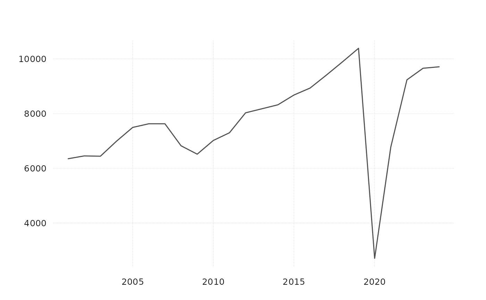

Aggregate univariate or multivariate time series from low to high frequency
aggr.RdAggregate univariate or multivariate time series from low to high frequency
Arguments
- x
a tx-boxable object at a high frequency (e.g. monthly or quarterly)
- conv_type
match the aggregated value via "first", "last", "sum", "mean". If conv_type == "uhero" then the name of the time series x is compared to the internal variable
sum_pattern. For matching series names the aggregation is based on "sum"; for all others it is based on "mean."- target_freq
target frequency "year", "quarter", "month", "week"
- na_rm
logical, if TRUE, incomplete periods are aggregated as well. For irregular series, incomplete periods are always aggregated.
Examples
monthly_data_example |>
aggr(conv_type = "sum", target_freq = "quarter")
#> # A tibble: 98 × 4
#> time VISNS_HI VAPNS_HI VADCNS_HI
#> <date> <dbl> <dbl> <dbl>
#> 1 2000-10-01 1686. 1797. 487.
#> 2 2001-01-01 1730. 1774. 531.
#> 3 2001-04-01 1683. 1853. 479.
#> 4 2001-07-01 1650. 1835. 486.
#> 5 2001-10-01 1287. 1440. 402.
#> 6 2002-01-01 1558. 1655. 489.
#> 7 2002-04-01 1600. 1773. 460.
#> 8 2002-07-01 1701. 1900. 502.
#> 9 2002-10-01 1594. 1765. 471.
#> 10 2003-01-01 1580. 1730. 491.
#> # ℹ 88 more rows
monthly_data_example |>
aggr(conv_type = "uhero", target_freq = "quarter")
#> # A tibble: 98 × 4
#> time VISNS_HI VAPNS_HI VADCNS_HI
#> <date> <dbl> <dbl> <dbl>
#> 1 2000-10-01 1686. 1797. 162.
#> 2 2001-01-01 1730. 1774. 177.
#> 3 2001-04-01 1683. 1853. 160.
#> 4 2001-07-01 1650. 1835. 162.
#> 5 2001-10-01 1287. 1440. 134.
#> 6 2002-01-01 1558. 1655. 163.
#> 7 2002-04-01 1600. 1773. 153.
#> 8 2002-07-01 1701. 1900. 167.
#> 9 2002-10-01 1594. 1765. 157.
#> 10 2003-01-01 1580. 1730. 164.
#> # ℹ 88 more rows
monthly_data_example |>
aggr(conv_type = "uhero", target_freq = "quarter") |>
tsbox::ts_long() |>
disagg(conv_type = "uhero", target_freq = "month") |>
tsbox::ts_wide() # this is close to original data
#> # A tibble: 294 × 4
#> time VISNS_HI VAPNS_HI VADCNS_HI
#> <date> <dbl> <dbl> <dbl>
#> 1 2000-10-01 558. 602. 158.
#> 2 2000-11-01 561. 600. 161.
#> 3 2000-12-01 567. 596. 168.
#> 4 2001-01-01 577. 590. 177.
#> 5 2001-02-01 579. 589. 179.
#> 6 2001-03-01 574. 595. 175.
#> 7 2001-04-01 562. 607. 163.
#> 8 2001-05-01 558. 618. 158.
#> 9 2001-06-01 563. 629. 159.
#> 10 2001-07-01 575. 639. 166.
#> # ℹ 284 more rows
# works with a single series too
monthly_data_example |>
tsbox::ts_long() |>
tsbox::ts_pick("VISNS_HI") |>
aggr(conv_type = "uhero", target_freq = "year") |>
tsbox::ts_plot()
